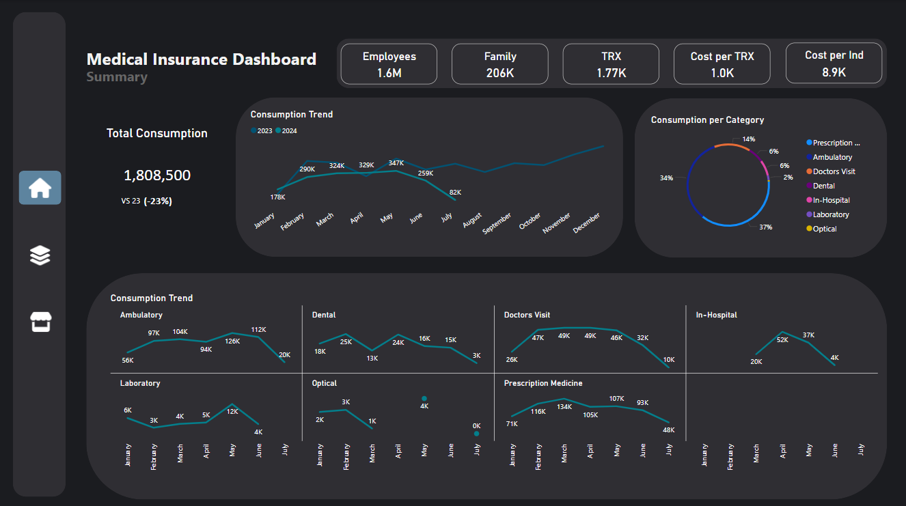
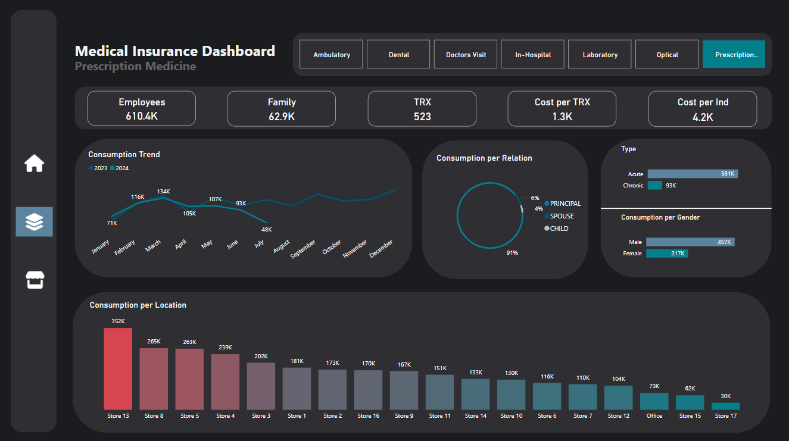
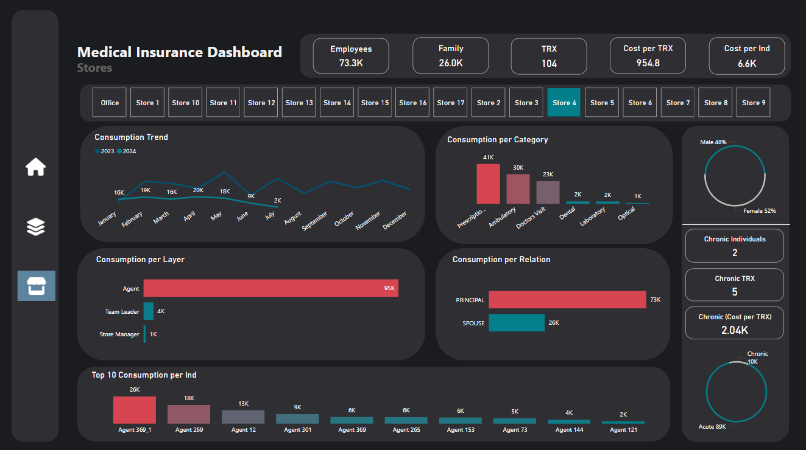

Project Introduction: A Data Analyst's Journey
In this series, we'll follow the journey of a data analyst hired at a company
that previously did not have a data analyst. Together, we’ll uncover insights and work through the
following three key steps:
- Create a summary dashboard (Overview).
- Develop one or two detailed dashboards.
- Showcase important insights and track key costs and KPIs in relevant
departments.
This approach closely mirrors my actual experience.
For this project, I will be using simulated data.
Note:
All companies' data are confidential by default, and as such, I
cannot use any real company data. However, if you are aware of any freely available online datasets,
feel free to share!
Medical Insurance (Project 2)
In this project, I developed a medical insurance dashboard to help track
employee consumption. The goal was to create a clear and insightful overview of medical insurance
activities, ensuring better decision-making and detecting any misuse or abuse of the service to reduce
consumption.
Goals:
- Design a summary dashboard providing an overview of medical insurance
activities using the available data.
- Develop a detailed dashboard that dives into each category of services.
- Create a dashboard to show details of services from the store view.
Tools used:
- Excel: For exploring and analyzing the initial data.
- Power BI: For creating detailed and interactive
visualizations.
Medical Insurance Dashboard: Summary
This dashboard provides an overview of key metrics, comparing current
consumption with the previous year. It highlights major trends and trend spikes, enabling you to quickly
identify areas for action to reduce consumption.
Key Questions
- Q1: How does current consumption compare to last year?
- Q2: What is the employee cost?
- Q3: What is the current trend, and what should I expect in
the next month (seasonality)?
- Q4: What is the consumption distribution?
- Q5: Which category is causing the spikes?

Medical Insurance Dashboard: Category
In this dashboard, we explore category insights to identify trends in
high-consumption stores, analyze employee costs within each category, examine family consumption
patterns, and explore additional metrics.
Key Questions
- Q1: What is the consumption trend in the specific category?
- Q2: What is the consumption for chronic diseases?
- Q3: What is the employee cost?
- Q4: What is the highest consumption among stores in the
specific category?
- Q5: What is the percentage of family consumption from the
total in the specific category?
- Q6: Is there a pattern between gender and consumption?

Medical Insurance Dashboard: Stores
This dashboard shows consumption from a store view, making it easier to see
specific details. It helps identify any unusual consumption and allows for a quick investigation into
those issues.
Key Questions
- Q1: What is the store consumption trend?
- Q2: How does the store distribute the consumption?
- Q3: Is there abnormal consumption in chronic diseases?
- Q4: Who has the highest consumption in the store?
- Q5: What's the consumption per relationship?
